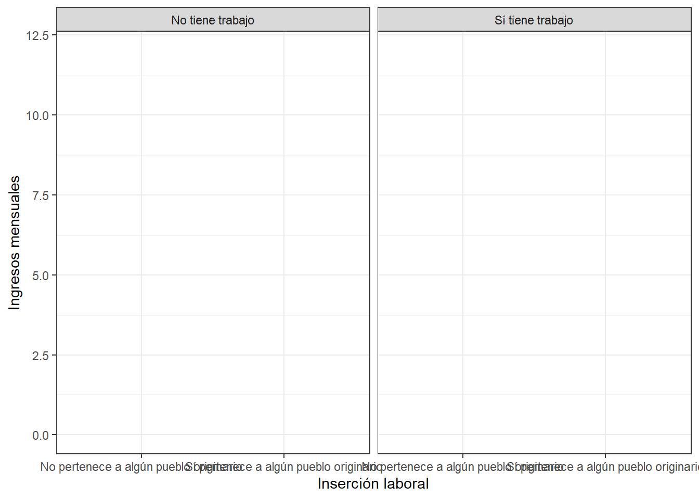

pacman::p_load(sjlabelled,
dplyr, #Manipulacion de datos
stargazer, #Tablas
sjmisc, # Tablas
summarytools, # Tablas
kableExtra, #Tablas
sjPlot, #Tablas y gráficos
corrplot, # Correlaciones
sessioninfo, # Información de la sesión de trabajo
ggplot2) # Para la mayoría de los gráficosDesigualdad Educativa en Chile: Perspectiva sobre el Acceso y Efectos en Pueblos Originarios
Por: José Norambuena
En Chile, históricamente ha existido una inequidad en cuanto al acceso a la educación, esto es visible desde un periodo que abarca la Independencia, llegando incluso al 2006, donde se difumina mínimamente la línea que podría hacer las veces de barrera (Núñez Prieto 2015). Esta inequidad se expresa en cuanto al acceso a educación primaria en un primer momento, sector de la educación donde existen los colegios (y para efectos de esta investigación) que clasificaremos como privados y públicos, siendo estos últimos los de más fácil acceso al no contar con una matrícula y suscripción mensual.
Por otro lado, el acceso a la educación superior presenta un acceso limitado, netamente en materia económica. Acerca de esto (Rivera-Vargas, Climent Sanjuan, and Rivera Bilbao 2021) nos comenta que los estudiantes que desean acceder a la educación superior no ven oportunidades de esto si no es con gratuidad, mientras que el CAE, más que ser una solución lo ven como una problemática al ser un crédito con garantía estatal. Por otro lado, los autores señalan que los alumnos con menos recursos son los que acceden a esta herramienta en masa, de manera que la deuda adquirida se arrastra durante muchos años y los riesgos de no pago son muy amplios por la misma razón que se adquirió esta herramienta financiera.
Ahora bien, una vez hecha la contextualización acerca de la inequidad al acceso a la educación es que me interesa tensionar aún más esta problemática. Según el Instituto Nacional de Estadística (INE) para el año 2018 un 12,8% de la población nacional, es decir cerca de 2.185.732 personas se consideran de algún pueblo originario. Hay un gran número de personas pertenecientes a pueblos originarios, y según el mismo organismo, un 84% de las personas que se consideran pertenecientes a pueblos originarios son mapuche, mientras que el otro 14% son del resto de pueblos (Quechua, Diaguita, Lickanantay y Quechua).
Respecto a lo anterior, me interesa sustancialmente investigar y cuantificar la proporción de personas que alcanzan el nivel completo de educación superior siendo parte de un pueblo originario, también dimensionar las personas que logran acceder a la educación superior sin ser necesario contemplar el hecho de finalizar sus estudios. Por otro lado, también me interesa poner de relieve la inserción laboral de las personas indígenas en comparación con las personas no indígenas y de la mano con esto, comparar cuántas personas con las mismas características y nivel de estudios, generan mayor o menor remuneración en sus trabajos. Por último, me dispongo a generar una comparativa en cuanto al género de las personas indígenas y si esto condiciona o no el nivel educativo y por supuesto el ingreso de cada persona.
Hay autores como por ejemplo, Quintriqueo and Arias-Ortega (2019) que plantean la interculturalidad como una propuesta con tintes políticos, éticos y epistémicos. Lo anterior con la finalidad de construir una sociedad que responda a reconocer la democracia y asimismo las diferentes sociedades y culturas que cohabitan en contextos de colonización. Por otro lado, Donoso Romo et al. (2006) nos brindan una mirada histórica en cuanto a la educación indígena en el continente, donde se sopesa la originalidad del escenario urbano como ámbito de la intervención en interculturalidad, como también el examen del desarrollo de la educación en el país. Los autores buscan palpar los límites práctico-teóricos que puede llegar a presentar la edificación de una interculturalidad en las sociedades que se centran en el cono sur del continente.
Ahora bien, volviendo a la problemática educativa en torno a las personas indígenas y no indígenas. Los autores Abarca and Zapata (2007) exponen que jóvenes provenientes de sectores que no habían tenido acceso a la educación superior han llegado a estudiar en universidades, institutos o centros de formación técnica (que es lo que entenderemos como educación superior). Los autores continúan comentando que la valoración positiva de la diversidad cultural en el mundo contemporáneo y por supuesto la incorporación de este tema en la agenda política desde los 90’s aproximadamente, ha hecho que el segmento de la población que se identifica con los pueblos originarios sea objeto de políticas públicas tendientes a promover el desarrollo social, económico y cultural sin pasar a llevar la especificidad de cada uno.
Por último, la hipótesis en cuanto al acceso a la educación superior y finalmente el reflejo de esto en los ingresos de las personas pertenecientes a pueblos originarios y las que no, como también la desagregación por género es que según la literatura las personas pertenecientes a minorías son las que menos oportunidades de desarrollo económico (por lo menos) poseen, lo mismo que en el caso de las mujeres indígenas (entendiendo que las mujeres son una minoría social en cuanto al campo laboral y no en cuanto a la magnitud poblacional).
Para efectos de esta investigación es que haré uso de la base de datos de la Encuesta de Caracterización Socioeconómica Nacional o CASEN del año 2022, de donde extraeré datos desde el sexo de las personas, pasando por el nivel educativo, la zona en la que vive, la ocupación y el ingreso de cada persona generando una perspectiva comparada.
Cargar paquetes.
Para efectos de lo descrito anteriormente, es menester poder visualizar las diversas formas de poder entender el fenómeno y en última instancia explicarlo. Si bien, cuando trabajamos con un script de R, lo primero que debemos hacer es contemplar los “paquetes” que debemos usar. Y para eso, usamos el siguiente código, que nos permite hacer de todo tipo de manipulación y análisis según lo fuesemos requiriendo.
Cargar base de datos.
Para este informe, con antelación, procesé la base de datos de la CASEN del 2022, la cual poseía muchísimas variables como también casos. Lo que hice en el marco de este análisis fue procesarla para poder quedarme sólo con las variables que me interesa trabajar, además, de filtrar la base de datos para que responda sólo a personas mayores de 18 años.
load(url("https://github.com/Joshezinho/Trabalho/raw/main/input/CASEN.rdata"))Visualizar nombre de las variables
names(CASEN)[1] "pueb_or" "educ" "est_educ_sup" "gratuidad" "cred_univ"
[6] "trabajo" "ingresos" sjlabelled::get_label(CASEN) pueb_or educ est_educ_sup gratuidad cred_univ trabajo
"" "" "" "" "" ""
ingresos
"" En este caso trabajaré con siete variables que me otorga la base de datos de la CASEN, siendo estas la pertenencia a algún pueblo originario, el nivel educativo, el tipo de establecimiento de educación superior, si para el año 2022 poseía gratuidad, como también si optó por algún tipo de crédito, si la persona tiene trabajo (o trabajó al menos el mes pasado) y los ingresos del mes pasado.
Estas variables me ayudarán a entender si realmente existe una brecha en cuanto al acceso a la educación superior y por supuesto generar la comparativa entre el nivel educativo, la inserción laboral y de la mano los ingresos.
Obtener descriptivos
#| fig-cap: “Plots”
sjmisc::descr(CASEN,
show = c("label","range", "mean", "sd", "NA.prc", "n"))%>%
kable(.,"markdown")| var | label | n | NA.prc | mean | sd | range | |
|---|---|---|---|---|---|---|---|
| 6 | pueb_or | pueb_or | 158509 | 0.0000000 | 1.130743e+00 | 3.371205e-01 | 1 (1-2) |
| 2 | educ | educ | 157721 | 0.4971327 | 3.057107e+00 | 8.161780e-01 | 4 (1-5) |
| 3 | est_educ_sup | est_educ_sup | 158509 | 0.0000000 | 1.579708e+00 | 1.108619e+00 | 4 (1-5) |
| 4 | gratuidad | gratuidad | 12055 | 92.3947536 | 1.444961e+00 | 4.969820e-01 | 1 (1-2) |
| 1 | cred_univ | cred_univ | 6876 | 95.6620760 | 1.999855e+00 | 1.403528e+00 | 4 (1-5) |
| 7 | trabajo | trabajo | 158509 | 0.0000000 | 1.505990e+00 | 4.999657e-01 | 1 (1-2) |
| 5 | ingresos | ingresos | 59644 | 62.3718527 | 6.615691e+05 | 6.457663e+05 | 2.5e+07 (0-2.5e+07) |
En esta acotada tabla podemos visualizar los casos que se encuentran en cada variable, la media, y la desviación estandar, es necesario especificar que la variable gratuidad y crédito universitario responde netamente a estudiantes que optaron con alguno de estos beneficios en el año 2022.
#| fig-cap: “Plots”
summarytools::dfSummary(CASEN, plain.ascii = FALSE)### Data Frame Summary
#### CASEN
**Dimensions:** 158509 x 7
**Duplicates:** 153453
--------------------------------------------------------------------------------------------------------------------------
No Variable Stats / Values Freqs (% of Valid) Graph Valid Missing
---- --------------- ---------------------------------- ---------------------- ---------------------- ---------- ---------
1 pueb_or\ 1\. No pertenece a algún pueb\ 137785 (86.9%)\ IIIIIIIIIIIIIIIII \ 158509\ 0\
[factor] 2\. Sí pertenece a algún pueb 20724 (13.1%) II (100.0%) (0.0%)
2 educ\ 1\. No asístió\ 3035 ( 1.9%)\ \ 157721\ 788\
[factor] 2\. Básica\ 36862 (23.4%)\ IIII \ (99.5%) (0.5%)
3\. Media\ 68204 (43.2%)\ IIIIIIII \
4\. Superior\ 47301 (30.0%)\ IIIII \
5\. Postgrados 2319 ( 1.5%)
3 est_educ_sup\ 1\. No asístió\ 121585 (76.7%)\ IIIIIIIIIIIIIII \ 158509\ 0\
[factor] 2\. C.F.T.\ 4555 ( 2.9%)\ \ (100.0%) (0.0%)
3\. I.P.\ 10308 ( 6.5%)\ I \
4\. Universidad\ 21526 (13.6%)\ II \
5\. Establecimiento de las Fu 535 ( 0.3%)
4 gratuidad\ 1\. No posee gratuidad\ 6691 (55.5%)\ IIIIIIIIIII \ 12055\ 146454\
[factor] 2\. Sí posee gratuidad 5364 (44.5%) IIIIIIII (7.6%) (92.4%)
5 cred_univ\ 1\. No cuenta con crédito\ 4136 (60.2%)\ IIIIIIIIIIII \ 6876\ 151633\
[factor] 2\. Crédito universitario o f\ 406 ( 5.9%)\ I \ (4.3%) (95.7%)
3\. Crédito con aval del Esta\ 1368 (19.9%)\ III \
4\. Crédito de institución\ 131 ( 1.9%)\ \
5\. Otro crédito 835 (12.1%) II
6 trabajo\ 1\. No tiene trabajo\ 78305 (49.4%)\ IIIIIIIII \ 158509\ 0\
[factor] 2\. Sí tiene trabajo 80204 (50.6%) IIIIIIIIII (100.0%) (0.0%)
7 ingresos\ Mean (sd) : 661569.1 (645766.3)\ 1185 distinct values :\ 59644\ 98865\
[numeric] min < med < max:\ :\ (37.6%) (62.4%)
0 < 490000 < 2.5e+07\ :\
IQR (CV) : 350000 (1) :\
:
--------------------------------------------------------------------------------------------------------------------------En esta segunda tabla, podemos ver más o menos la distribución de cada variable. En este caso ya podemos comenzar a analizar esta un poco más en profundidad. En un primer momento podemos visualizar la diferencia entre las personas pertenecientes a pueblos originarios y las que no. En cuanto a la educación, se puede ver en el gráfico una forma parecida a la de una curva normal, pero posteriormente ahondaré en ello. En cuanto a la gratuidad y los créditos, las personas que fueron (o pueden seguir siendo) estudiantes de educación superior en el año 2022, una proporción no menor representa aquellos estudiantes que estudian con gratuidad. Por último, respecto a los ingresos, la forma de la curva presenta asimetría, que se puede interpretar como que mayor cantidada de personas obtienen por su trabajo, en este caso, menos del suelo mínimo en comparación con las personas que tienen sueldos muy abultados.
#| fig-cap: “Plots”
sjt.xtab(CASEN$educ, CASEN$pueb_or,
show.col.prc=TRUE,
show.summary=FALSE,
encoding = "UTF-8")| educ | pueb_or | Total | |
| No pertenece a algún pueblo originario |
Sí pertenece a algún pueblo originario |
||
| No asístió | 2511 1.8 % |
524 2.5 % |
3035 1.9 % |
| Básica | 31135 22.7 % |
5727 27.8 % |
36862 23.4 % |
| Media | 59177 43.2 % |
9027 43.8 % |
68204 43.2 % |
| Superior | 42076 30.7 % |
5225 25.3 % |
47301 30 % |
| Postgrados | 2207 1.6 % |
112 0.5 % |
2319 1.5 % |
| Total | 137106 100 % |
20615 100 % |
157721 100 % |
Si bien, las diferencias entre pertenecer y no a un pueblo orignario respondiendo a su nivel educativo son muy diferente en cuanto a frecuencias, lo correcto sería sólo visualizar los porcentajes, ya que nos entregan, valga la redundancia, la proporción de personas de pueblos originarios o no respecto a su nivel educativo. Es visible que en proporciós más personas no asistieron a ningún tipo de educación siendo de pueblos originarios que las que no pertenecen. La educación básica y media es muy similar. Ahora respecto a estudios superiores está lo interesante, las personas que pertenecen a pueblos originarios, si bien, logran alcanzar la educación superior, la proporción es menor, lo mismo con estudios de postgrados, es casi 1% más en las personas que no pertenecen a pueblos origniarios. Muy al contrario de lo que uno puede creer, las personas de pueblos originarios, si logran en una proporción no menor, estudios superiores.
#| fig-cap: “Plots”
sjt.xtab(CASEN$est_educ_sup, CASEN$pueb_or,
show.col.prc=TRUE,
show.summary=FALSE,
encoding = "UTF-8")| est_educ_sup | pueb_or | Total | |
| No pertenece a algún pueblo originario |
Sí pertenece a algún pueblo originario |
||
| No asístió | 104364 75.7 % |
17221 83.1 % |
121585 76.7 % |
| C.F.T. | 3976 2.9 % |
579 2.8 % |
4555 2.9 % |
| I.P. | 9185 6.7 % |
1123 5.4 % |
10308 6.5 % |
| Universidad | 19758 14.3 % |
1768 8.5 % |
21526 13.6 % |
| Establecimiento de las Fuerzas Armadas |
502 0.4 % |
33 0.2 % |
535 0.3 % |
| Total | 137785 100 % |
20724 100 % |
158509 100 % |
Aquí se repite un poco la tendencia, las personas no pertenecientes logran alcanzar estudios superiores, independiente del establecimiento. Ahora bien, se ve que en general, son más las personas que no alcanzan niveles superiores de educación.
#| fig-cap: “Plots”
sjt.xtab(CASEN$gratuidad, CASEN$pueb_or,
show.col.prc=TRUE,
show.summary=FALSE,
encoding = "UTF-8")| gratuidad | pueb_or | Total | |
| No pertenece a algún pueblo originario |
Sí pertenece a algún pueblo originario |
||
| No posee gratuidad | 5523 53.7 % |
1168 65.7 % |
6691 55.5 % |
| Sí posee gratuidad | 4754 46.3 % |
610 34.3 % |
5364 44.5 % |
| Total | 10277 100 % |
1778 100 % |
12055 100 % |
En esta tabla, es visible la cantidad de personas que no poseen gratuidad, esto quiere decir que por alguna razón (que desconocemos), puede ser que las personas que si pertenecen a algún pueblo originario, deban optar a algún crédito, eso lo visibilizaremos a continuación:
#| fig-cap: “Plots”
sjt.xtab(CASEN$cred_univ, CASEN$pueb_or,
show.col.prc=TRUE,
show.summary=FALSE,
encoding = "UTF-8")| cred_univ | pueb_or | Total | |
| No pertenece a algún pueblo originario |
Sí pertenece a algún pueblo originario |
||
| No cuenta con crédito |
3645 60 % |
491 61.4 % |
4136 60.2 % |
| Crédito universitario o fondo solidario |
346 5.7 % |
60 7.5 % |
406 5.9 % |
| Crédito con aval del Estado |
1238 20.4 % |
130 16.2 % |
1368 19.9 % |
| Crédito de institución |
115 1.9 % |
16 2 % |
131 1.9 % |
| Otro crédito | 732 12 % |
103 12.9 % |
835 12.1 % |
| Total | 6076 100 % |
800 100 % |
6876 100 % |
En este caso la distribución es bastante similar en cuanto a la pertenencia de pueblos originarios y si poseen o no un crédito de algún tipo. Es muy posible, que muchas personas pertenecientes a pueblos originarios puedan contar con una beca, pero en general muchas personas optan a créditos por ambos lados.
#| fig-cap: “Plots”
sjt.xtab(CASEN$educ, CASEN$pueb_or,
show.col.prc=TRUE,
show.summary=FALSE,
encoding = "UTF-8")| educ | pueb_or | Total | |
| No pertenece a algún pueblo originario |
Sí pertenece a algún pueblo originario |
||
| No asístió | 2511 1.8 % |
524 2.5 % |
3035 1.9 % |
| Básica | 31135 22.7 % |
5727 27.8 % |
36862 23.4 % |
| Media | 59177 43.2 % |
9027 43.8 % |
68204 43.2 % |
| Superior | 42076 30.7 % |
5225 25.3 % |
47301 30 % |
| Postgrados | 2207 1.6 % |
112 0.5 % |
2319 1.5 % |
| Total | 137106 100 % |
20615 100 % |
157721 100 % |
Gráficos
Ahora bien, pudimos ver más o menos la distribución de personas pertenecientes a peblos originarios y no, con diversas variables. Lo que me propongo hacer de aquí en más, es demostrar con gráficos las dos variables que nos quedan por explorar.
datos <- CASEN %>% group_by(trabajo, pueb_or) %>%
summarise(promedio = mean(ingresos))`summarise()` has grouped output by 'trabajo'. You can override using the
`.groups` argument.ggplot(datos, aes(x =pueb_or, y = promedio)) +
geom_point() +
labs(x = "Inserción laboral", y = "Ingresos mensuales") +
theme_bw()+
ylim(0, 12)+
facet_wrap(~trabajo)Warning: Removed 4 rows containing missing values or values outside the scale range
(`geom_point()`).
References
Abarca, Geraldine, and Claudia Zapata. 2007. “Indígenas y Educación Superior En Chile: El Caso Mapuche.” Calidad En La Educación, no. 26 (May): 57–79. https://doi.org/10.31619/caledu.n26.233.
Donoso Romo, Andrés, Rafael Contreras Mühlenbrock, Leonardo Cubillos Puelma, and Luis Aravena Aragón. 2006. “INTERCULTURALIDAD Y POLÍTICAS PÚBLICAS EN EDUCACIÓN: REFLEXIONES DESDE SANTIAGO DE CHILE.” Estudios Pedagógicos (Valdivia) 32 (1). https://doi.org/10.4067/S0718-07052006000100002.
Núñez Prieto, Iván. 2015. “Educación Chilena En La República: Promesas de Universalismo y Realidades de Inequidad En Su Historia.” Psicoperspectivas. Individuo y Sociedad 14 (3): 5–16. https://doi.org/10.5027/psicoperspectivas-Vol14-Issue3-fulltext-617.
Quintriqueo, Segundo, and Katerin Arias-Ortega. 2019. “EDUCACIÓN INTERCULTURAL ARTICULADA A LA EPISTEME INDÍGENA EN LATINOAMÉRICA. EL CASO MAPUCHE EN CHILE.” Diálogo Andino, no. 59 (June): 81–91. https://doi.org/10.4067/S0719-26812019000200081.
Rivera-Vargas, Pablo, Victor Climent Sanjuan, and René Rivera Bilbao. 2021. “Acceso a La Educación Superior En Chile Desde La Financiación Privada: Entre La Inequidad Estructural y La Oportunidad Individual.” Educar 57 (2): 447–63. https://doi.org/10.5565/rev/educar.1204.